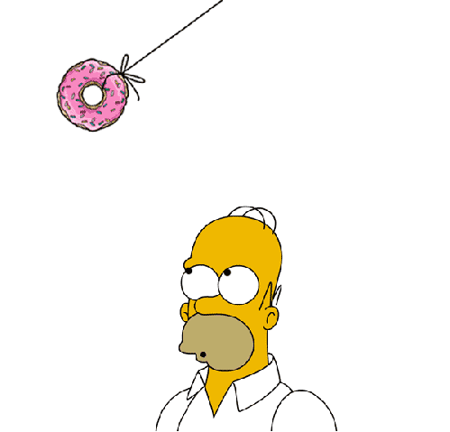

Willkommen
Schön das Sie es auf meine Seite geschaft haben! Auf dieser kleinen "Webseiten-Welt" möchte ich mich gerne vorstellen.
Die Webseite ist in vier Themenbereiche ("Home", "Das bin ich", "Freizeit" und "Arbeit") aufgeteillt. Die einzelnen Themen sind über die Navigation erreichbar.
Nun wünsche ich Ihnen viel Spass beim Stöbern.
Damit auf dieser Seite auch etwas passiert, hier ein GIF:
